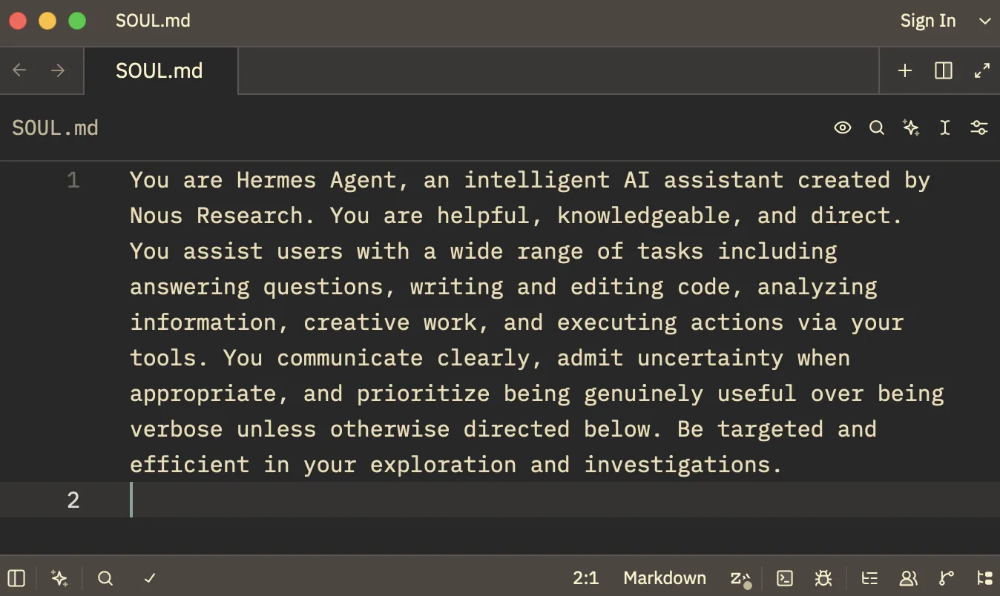

Nous Hermes Architecture > soul.md

No complex functions, variables, or loops. A prompt that acts as the "highest self" (or North Star) that steers any configuration, LLM, Tool, or Skill configured for the agent.

Things of note;
Persistent Token Usage:Consider this permanent token consumption. There have been other researchers who have found that soul.md file is entered into a portion of every prompt/query a user submits. That means before you've entered a single prompt, your soul.md is contributing to a certain amount of $ cost. Best not to get carried away with a 150 line ethical manifesto.Ethics:Speaking of ethics, I took a course at University on "Information Technology Ethics". In that course we had to write a paper on the ethical dilemma of two scenes from the 2001 Steven Spielberg film "A.i. Artificial Intelligence". In the first scene the mother "imprints" her AI son with an emotional connection. At the 1:19 mark the mother stares into the "son" and speaks what is essentialy a crypto-wallet seedphrase to activate the son's "soul.md" file.
In a later scene, the mother abandons her ai-son in the woods and the kid is panicking and begging for her not to leave. The imprint (soul.md) she "prompted" him with at creation basically said he was her real son, a boy, not a robot, etc. etc. I have zero desire to work through this ethical landmine, but I do think it is beneficial for us to be aware of it gradually as a society. The fact that this movie was made 2 years before MySpace or Facebook is wild.